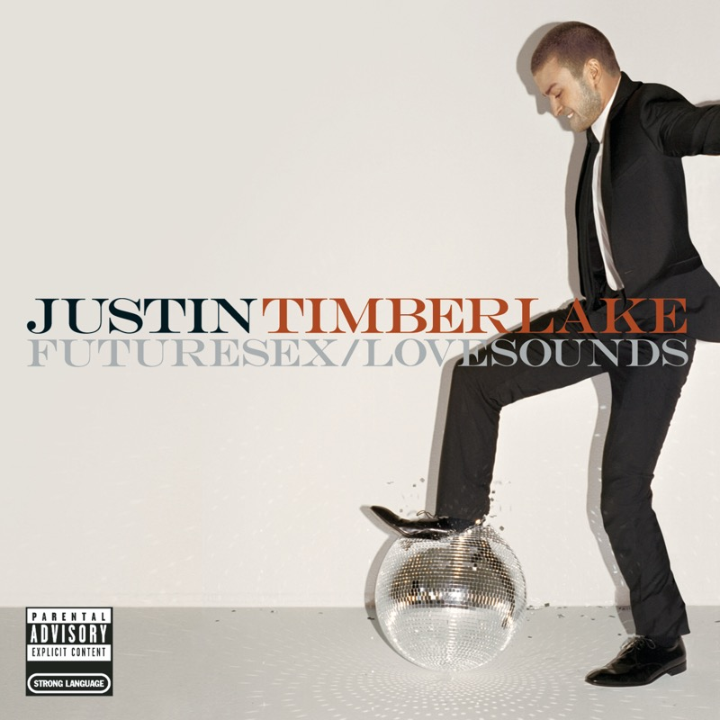
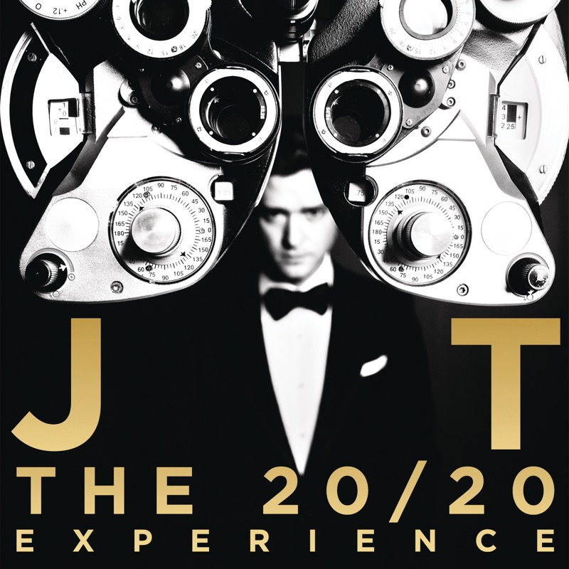
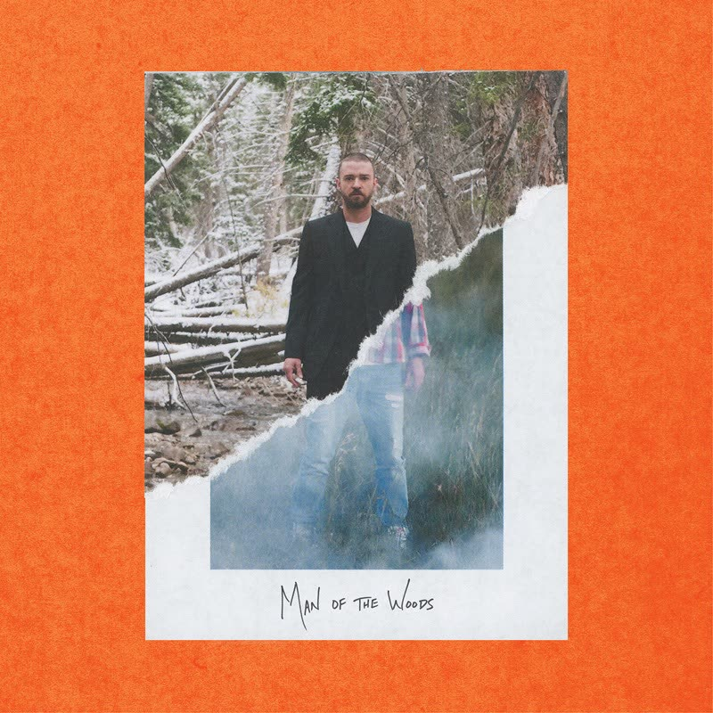
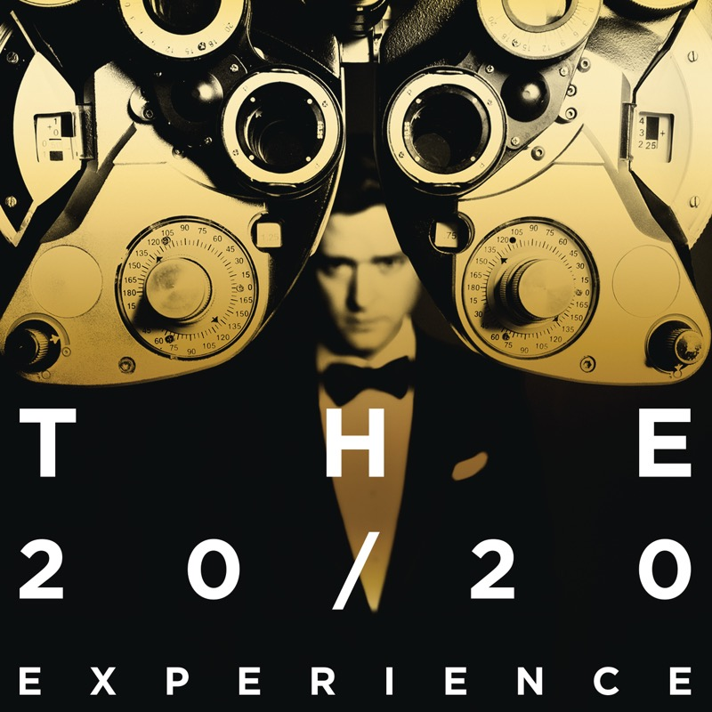
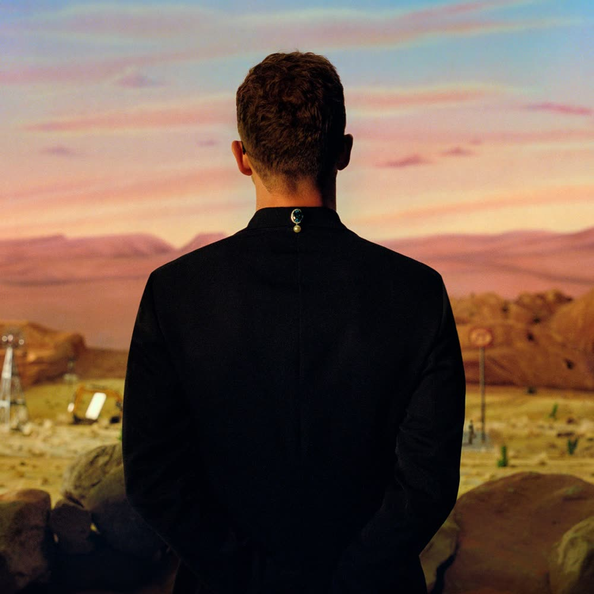

Justin Timberlake Streaming Report
Data as of 25 July 2026 · Compiled by Emir Kilic for Timberlake Analytics · Source: live Spotify counts via Kworb, YouTube Data API v3
Where the 18.56 billion actually sits
Spotify streams by era. Every track is assigned to the album it was released on; everything else is grouped as non-album.






Career equivalent album sales
The same catalogue converted to album equivalents, and — more interestingly — what each era is actually made of.
Era detail
Totals and current daily rates, 25 July 2026.
| Era | Year | Total streams | Daily | Share |
|---|---|---|---|---|
| Non-album singles & features | 2002–2026 | 8,078,684,996 | +3,448,384 | 43.5% |
| FutureSex/LoveSounds | 2006 | 3,813,596,225 | +2,740,611 | 20.5% |
| The 20/20 Experience | 2013 | 2,392,278,191 | +1,403,224 | 12.9% |
| Justified | 2002 | 2,391,641,533 | +1,352,359 | 12.9% |
| Man of the Woods | 2018 | 1,037,775,666 | +97,114 | 5.6% |
| The 20/20 Experience – 2 of 2 | 2013 | 542,034,530 | +50,678 | 2.9% |
| Everything I Thought It Was | 2024 | 308,079,143 | +74,624 | 1.7% |
Year-end projection
Weighted blend of the 7-day, 30-day and year-to-date rates.
Timberlake has added 3.03 billion streams so far in 2026, running at roughly 8.68 million per day on the blended rate. On that trajectory the catalogue finishes the year at approximately 19.95 billion, which would put the 20 billion milestone in the opening weeks of 2027.
Method, in one paragraph
Stream totals are read live from Kworb's Spotify pages and reconciled nightly against a Firestore snapshot, which is what makes the daily and 30-day deltas possible. Equivalent album sales use the Chartmasters CSPC conversion (1,166 Spotify streams or 6,750 YouTube views to one album equivalent, singles divided by ten). Certified units combine awards from RIAA, BPI, ARIA, BVMI and 60+ other bodies with US units currently eligible for certification under live streaming data. Full formulas, sources and known caveats are on the methodology page.